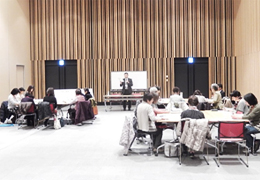

埼玉県消費者団体連絡会
共通の学習テーマを｢終活｣とし、4つの会場で開催し、延べ20団体53人が参加しました。また、同じ地域で活動する消費者団体どうしの相互理解の推進と課題の共有化、日常の取り組みの意見や情報を交換しあいました。
講師：コプセ葬終活アドバイザー西澤さん(鴻巣､春日部会場)･篠崎さん(川越､寄居会場)
志木市くらしの会、コープみらい、NPO法人埼玉消費者被害をなくす会、埼玉公団住宅自治会協議会、埼玉消団連 |
上尾市消費者団体連絡会、コープみらい、埼玉母親大会連絡会、埼玉消団連 |
コープみらい、NPO法人埼玉消費者被害をなくす会、新日本婦人の会、埼玉消団連 |
コープみらい、NPO法人埼玉消費者被害をなくす会、春日部市くらしの会、さいたま市消団連、埼玉消団連 |
|  |